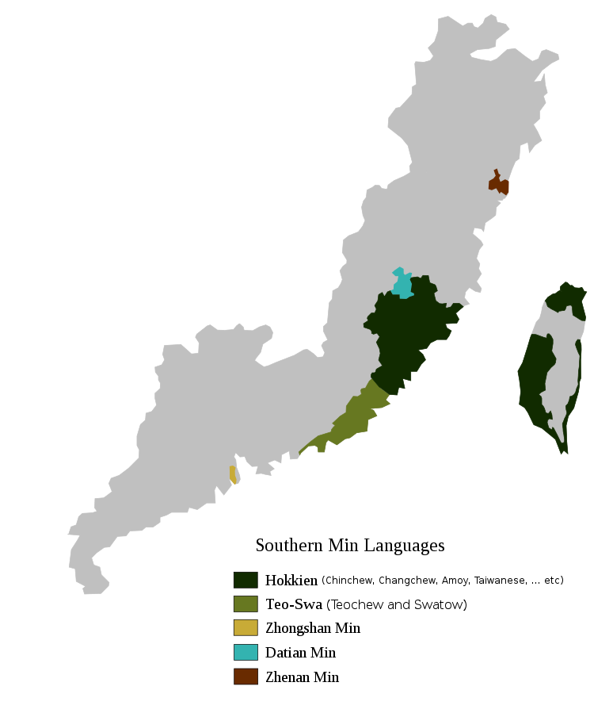

|
Hokkien (/ˈhɒkiɛn/; Chinese: 福建話; pinyin: Fújiànhuà, Pe̍h-ōe-jī: Hok-kiàn-ōe, [hoʔ˦kiɛn˨˩ue˧])[a] or Minnan (閩南語/闽南语), known as Quanzhang or Tsuan-Tsiang (泉漳) in linguistics, is a Southern Min language originating from the Minnan region in the south-eastern part of Fujian Province in Southeastern China and spoken widely there. It is also spoken widely in Taiwan, where it is usually known as Taiwanese or Holo, and by the Chinese diaspora in Malaysia, Singapore, Indonesia, the Philippines and other parts of Southeast Asia and by other overseas Chinese all over the world.
Hokkien historically served as the lingua franca amongst overseas Chinese communities of all dialects and subgroups in Southeast Asia and remains today as the most spoken variety of Chinese in the region, including in Singapore, Malaysia, Indonesia, Philippines and some parts of Indochina (particularly Thailand, Vietnam, Laos and Cambodia).
The Betawi Malay language, spoken by some five million people in and around the Indonesian capital Jakarta, includes numerous Hokkien loanwords due to the significant influence of the Chinese Indonesian diaspora, most of whom are of Hokkien ancestry and origin.
|

Distribution of Southern Min languages. Quanzhang (Hokkien) is dark green.
|